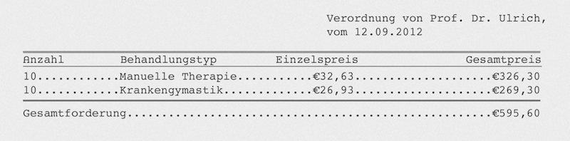

-
Fill table space with dots in LaTeX
October 6, 2012
While doing some work for the Physical Therapy Office I was faced with a small challenge, for my aim was to fill the space within a table - more precisely the space within two rows - with dots.

At first the answer was pretty obvious: the
\dottfillcommand! But that will not work our properly, for there will remain margins on each side of every row, what will significantly compromise the aesthetics.What needed to be done is to set the margins to zero on each side of every row. This has been achieved by modifying the
tabularcommand. Usually yourtabularcommand looks something like this\begin{tabular}{lll}when you want your rows to be left aligned. But in order to achieve the desired look we need to put an
@{}in front of and at the end of each row, what will eliminate the margins.The tabular command should now look like the one below.
\begin{tabular}{@{}l@{}l@{}l@{}}</code></pre>Having this done, the rest should not constitute a challenge anymore. I have added my final code snippet of the invoice I made below.
\begin{table}[h] \begin{tabular}{@{}l@{}l@{}l@{}r@{}r@{}r@{}r@{}} \toprule[1.2pt] Anzahl & \hspace{4.3em} & Behandlungstyp & \multicolumn{1}{@{\hspace{7em}}r@{}}{} & & Einzelpreis & \multicolumn{1}{@{\hspace{9.8em}}r@{}}{Gesamtpreis}\\ \midrule \multicolumn{2}{@{}l@{}}{\aa\dotfill} & \multicolumn{4}{@{}l@{}}{\ab\dotfill \ac} & \dotfill \ad\\ \multicolumn{2}{@{}l@{}}{\ba\dotfill} & \multicolumn{4}{@{}l@{}}{\bb\dotfill \bc} & \dotfill \bd\\ \ifdefined\ca \multicolumn{2}{@{}l@{}}{\ca\dotfill} & \multicolumn{4}{@{}l@{}}{\cb\dotfill \cc} & \dotfill \cd\\ \else \fi \ifdefined\da \multicolumn{2}{@{}l@{}}{\da\dotfill} & \multicolumn{4}{@{}l@{}}{\db\dotfill \dc} & \dotfill \dd\\ \else \fi \bottomrule[1.2pt]\addlinespace[5pt] \multicolumn{7}{@{}l@{}}{Gesamtforderung\dotfill \gesamt}\\ \end{tabular} \end{table}This small change in the
tabularcommand will render - if properly implemented - the output at the top. -
How to exclude pages from wordpress search
May 14, 2012
By default WordPress returns all posts and pages when an user runs a search. But mostly users are searching for an log entry rather than a static page. To make your search results more relevant consider editing your
functions.phpfile by adding following code:function SearchFilter($query) { if ($query->is_search) { $query->set('post_type', 'post'); } return $query; }add_filter(‘pre_get_posts’,’SearchFilter’); Abovementioned code executes the search and returns only
post_typedata.However, to exclude individual pages it might be a good idea to consider the use of the Simply Exclude Plugin by Paul Menard.
Newer Page 2 of 2 Older